Bear, Stage D: the desk station
sequences
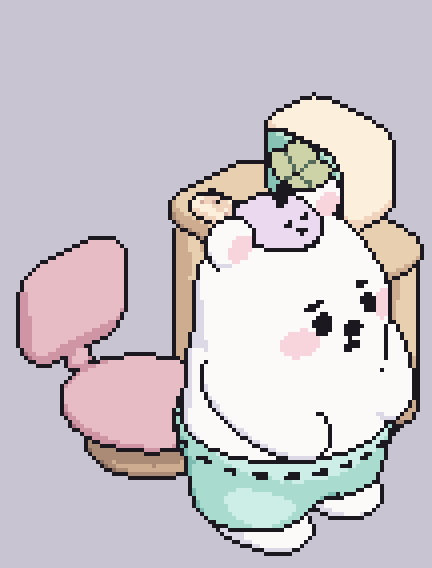
A: sit, type, swivel in, talk, ask, swivel out, type, swivel in, stand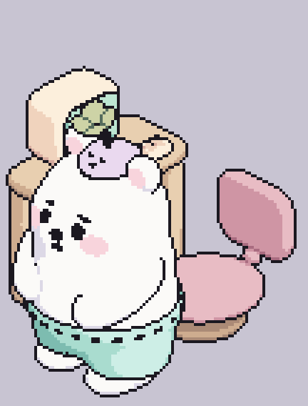
B (mirror)desk_sit
A, 20 framesB (mirror), 20 frames
desk_type
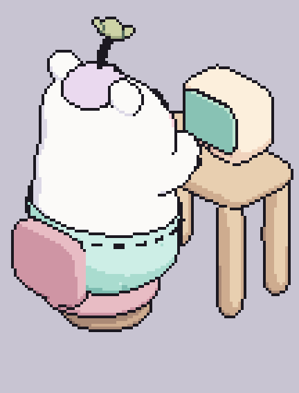
A, 16 frames loop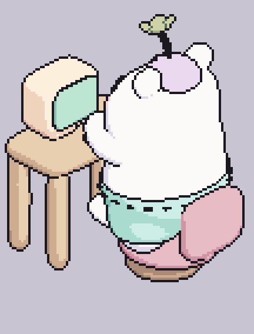
B (mirror), 16 frames loopdesk_swivel_in
A, 6 framesB (mirror), 6 frames
desk_talk
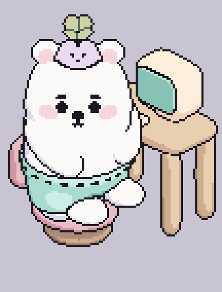
A, 20 frames loop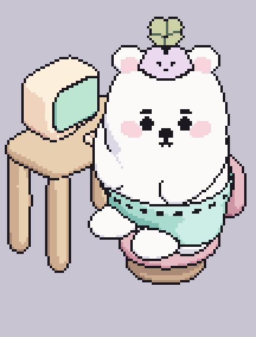
B (mirror), 20 frames loopdesk_ask
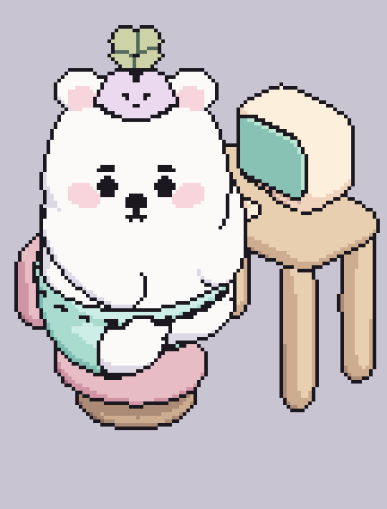
A, 20 frames loop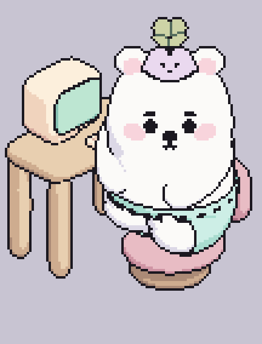
B (mirror), 20 frames loopdesk_swivel_out
A, 6 framesB (mirror), 6 frames
desk_stand
A, 16 framesB (mirror), 16 frames
props (A / B)
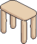
desk_table A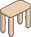
desk_table Bchair A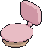
chair B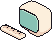
computer A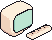
computer Bprops-only frames
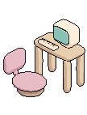
desk_A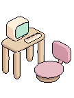
desk_B